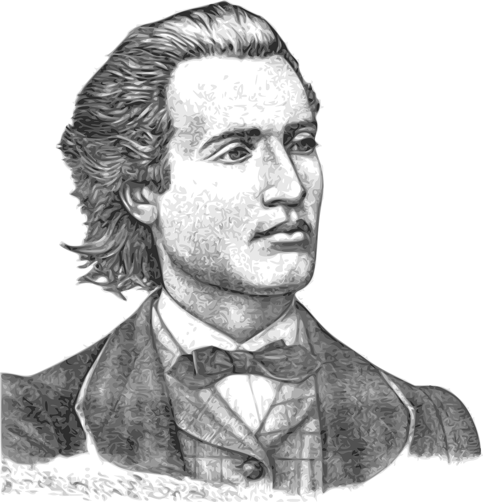
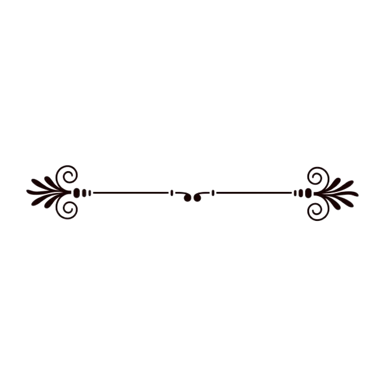

MISTER MIHAI EMINESCU
Welcome to Mihai Eminescu HUB
All the works of Mihai Eminescu are
collected here.
To find the poem you want
enter the title in the search or click the
Poems button.



Brief biography of Mihai Eminescu
Mihai Eminescu (born Mihail Eminovici; 15 January 1850 – 15 June 1889).
was a Romanian Romantic poet from Moldova, novelist, and journalist, generally
regarded as the most famous and influential Romanian poet.
Notable works include Luceafărul (The Vesper/The Evening Star/The Lucifer/
The Daystar), Odă în metru antic (Ode in Ancient Meter), and the five Letters (Epistles/
Satires). In his poems, he frequently used metaphysical, mythological and historical
subjects.
SIGNATURE OF MIHAI EMINESCU